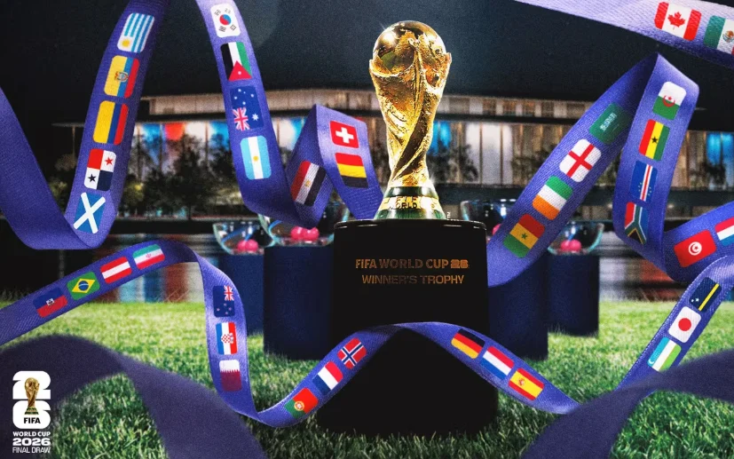

A Copa do Mundo de 2026 será um dos maiores eventos esportivos da história do futebol mundial. A competição reunirá seleções de diferentes continentes em uma disputa marcada por emoção, rivalidade e paixão pelo esporte. Torcedores do mundo inteiro acompanharão cada partida, transformando o torneio em uma verdadeira celebração global do futebol.

Pela primeira vez na história, a Copa contará com 48 seleções participantes, aumentando ainda mais a competitividade e dando oportunidade para novas equipes brilharem no cenário internacional. O torneio será sediado em três países da América do Norte: United States, Canada e Mexico, tornando esta edição uma das mais grandiosas já realizadas.
Além dos jogos emocionantes, a Copa do Mundo 2026 promete apresentar estádios modernos, grandes cerimônias e uma experiência inesquecível para fãs e jogadores. As maiores estrelas do futebol mundial estarão em campo representando seus países e buscando conquistar o troféu mais importante do esporte.

Além dos jogos emocionantes, a Copa do Mundo 2026 promete apresentar estádios modernos, grandes cerimônias e uma experiência inesquecível para fãs e jogadores. As maiores estrelas do futebol mundial estarão em campo representando seus países e buscando conquistar o troféu mais importante do esporte.
A Copa de 2026 será muito mais do que um campeonato de futebol. Será um evento capaz de unir culturas, conectar pessoas e mostrar ao mundo a força e a paixão que o esporte possui. Cada partida carregará emoção, esperança e o sonho de milhões de torcedores espalhados pelo planeta.
